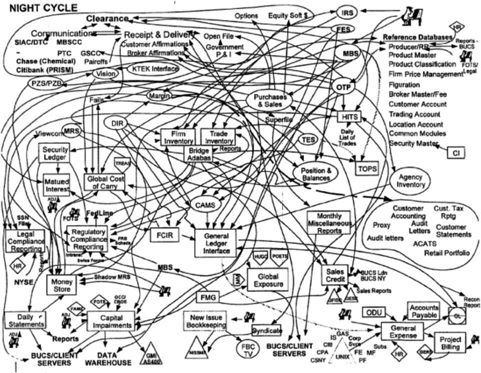
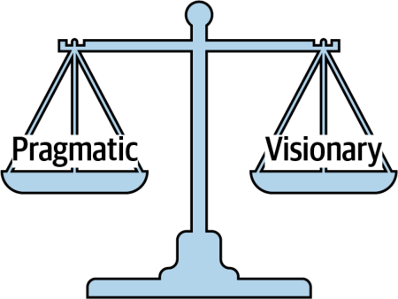
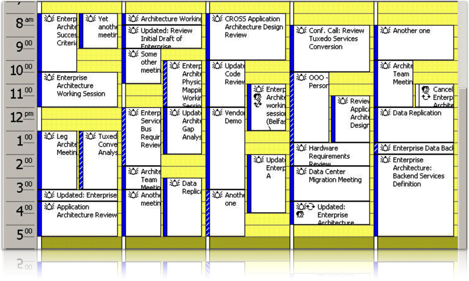

مهارتهای مذاکره (negotiation skills) و رهبری (leadership) مهارتهایی دشوارند که تنها از راه سالها یادگیری، تمرین و اشتباه به دست میآیند؛ اما برای تبدیل شدن به یک معمار نرمافزارِ اثربخش حیاتیاند. این کتاب نمیتواند کسی را یکشبه در مذاکره و رهبری خبره کند، اما فنونی که در این فصل معرفی میکنیم نقطهٔ شروع خوبیاند. برای کندوکاو عمیقتر در این موضوع، کتاب Tanya Reilly با عنوان The Staff Engineer’s Path: A Guide for Individual Contributors (O’Reilly، ۲۰۲۲) و کتاب کلاسیک مذاکره Getting to Yes: Negotiating Agreement Without Giving In (Penguin Books، ۲۰۱۱) نوشتهٔ Roger Fisher، William L. Ury و Bruce Patton را پیشنهاد میکنیم.
مذاکره و تسهیلگری
در فصل ۱، انتظارات اصلی از معماران نرمافزار را برشمردیم. آخرین انتظاری که بررسی کردیم، درک سیاستهای اداری (office politics) سازمان و توانایی گذر از پیچوخمهای آن بود. دلیل اهمیت این انتظار آن است که تقریباً هر تصمیمی که بهعنوان معمار نرمافزار میگیرید به چالش کشیده خواهد شد: از سوی توسعهدهندگانی که گمان میکنند بیشتر میدانند، از سوی معماران دیگری که گمان میکنند ایده یا رویکرد بهتری برای مسئله دارند، و از سوی ذینفعانی که گمان میکنند راهحل شما بیش از حد گران است یا زمان زیادی میبرد.
مذاکره (negotiation) یکی از مهمترین مهارتهای معمار است. معماران نرمافزارِ اثربخش سیاستهای سازمان را درک میکنند، مهارتهای قوی در مذاکره و تسهیلگری (facilitation) دارند و میتوانند بر اختلافنظرها چیره شوند تا راهحلهایی پدید آورند که همهٔ ذینفعان بر سرشان توافق داشته باشند.
مذاکره با ذینفعان کسبوکار
سناریوی زیر را در نظر بگیرید که در آن شما، در نقش معمار ارشد (lead architect)، باید با یک ذینفع کلیدیِ کسبوکار مذاکره کنید:
سناریوی ۱ (Scenario 1): Parker، معاون ارشد و حامی محصول (product sponsor) این پروژه، اصرار دارد که سیستم جدید معاملات جهانی باید از در دسترسبودنِ «پنج نُه» (۹۹٫۹۹۹٪) پشتیبانی کند. با این حال، بر پایهٔ فاصلهٔ زمانی میان بازارهای جهانی که در آن معاملهای انجام نمیشود (دو ساعت)، میدانید که در دسترسبودنِ «سه نُه» (۹۹٫۹٪) برای برآوردن نیازمندیهای پروژه کافی است. مشکل این است که دیدهاید Parker خوش ندارد اشتباه کند و به تصحیح شدن واکنش خوبی نشان نمیدهد، بهویژه اگر آن را تحقیرآمیز بداند. Parker دانش فنی ندارد، اما گمان میکند دارد؛ از این رو معمولاً در جنبههای غیرکارکردیِ پروژهها دخالت میکند. هدف شما در نقش معمار این است که از راه مذاکره Parker را متقاعد کنید که در دسترسبودنِ سه نُه (۹۹٫۹٪) کافی است.
باید مراقب باشید در تحلیل خود بیش از حد خودبین و تحکمآمیز نباشید، اما در عین حال باید مطمئن شوید چیزی را از قلم نینداختهاید که در جریان مذاکره نادرستیِ نظرتان را ثابت کند. چند فن کلیدیِ مذاکره وجود دارد که در اینگونه مذاکره با ذینفعان به کارتان میآید. نخستین فن این است:
واژههای داغ سازمانی معمولاً بیمعنایند، اما وقتی در آستانهٔ ورود به مذاکره هستید، میتوانند اطلاعات ارزشمندی فراهم کنند. فرض کنید میپرسید یک قابلیت خاص کی لازم است و Parker پاسخ میدهد: «دیروز لازمش داشتم.» نمیتوانید به معنای واقعی کلمه چنین چیزی را فراهم کنید، اما این پاسخ باید به شما بگوید که زمان عرضه به بازار برای این ذینفع مهم است. به همین ترتیب، عبارت «این سیستم باید برقآسا باشد» یعنی کارایی دغدغهٔ بزرگی است، و «صفر زمان ازکارافتادگی» نه به معنای واقعی کلمه، بلکه به این معناست که در دسترسبودن در این برنامه حیاتی است. معماران نرمافزارِ اثربخش از لابهلای چنین گزارههای اغراقآمیزی دغدغههای واقعی ذینفع را درمییابند. این ما را به دومین فن مذاکره میرساند:
به کار بردنِ عبارت «پنج نُه» از سوی Parker نشان میدهد که او میخواهد سیستم در دسترسبودن بالایی داشته باشد (بهطور مشخص، ۹۹٫۹۹۹٪ زمان فعالیت). با این حال، ممکن است Parker نداند که در دسترسبودنِ «پنج نُه» از نظر مقدار زمان ازکارافتادگی در سال واقعاً به چه معناست. جدول ۲۵-۱ زمانهای ازکارافتادگی را بر پایهٔ تعداد نُههای در دسترسبودن نشان میدهد.
جدول ۲۵-۱. نُههای در دسترسبودن
درصد زمان فعالیت
زمان ازکارافتادگی در سال (در روز)
۹۰٫۰٪ (یک نُه)
۳۶ روز و ۱۲ ساعت (۲٫۴ ساعت)
۹۹٫۰٪ (دو نُه)
۸۷ ساعت و ۴۶ دقیقه (۱۴ دقیقه)
۹۹٫۹٪ (سه نُه)
۸ ساعت و ۴۶ دقیقه (۸۶ ثانیه)
۹۹٫۹۹٪ (چهار نُه)
۵۲ دقیقه و ۳۳ ثانیه (۷ ثانیه)
۹۹٫۹۹۹٪ (پنج نُه)
۵ دقیقه و ۳۵ ثانیه (۱ ثانیه)
۹۹٫۹۹۹۹٪ (شش نُه)
۳۱٫۵ ثانیه (۸۶ میلیثانیه)
در دسترسبودنِ «پنج نُه» برابر با ۵ دقیقه و ۳۵ ثانیه زمان ازکارافتادگی در سال، یا بهطور میانگین ۱ ثانیه زمان ازکارافتادگیِ برنامهریزینشده (unplanned downtime) در روز است. این هدف بلندپروازانه و پرهزینه است و چنانکه معلوم میشود، با توجه به فاصلهٔ زمانی میان معاملات جهانی که در آن معاملهای انجام نمیشود، برای سناریوی ۱ غیرضروری است. بیان این اهداف بر حسب ساعت و دقیقه (یا در این مورد، ثانیه) راه بسیار بهتری برای پیش بردن گفتوگو است تا پایبندی به زبانِ «نُهها»، زیرا سنجههای واقعی و اعداد کمّی را به بحث وارد میکند.
مذاکره در سناریوی ۱ شامل تأیید دغدغههای Parker («درک میکنم که در دسترسبودن برای این سیستم بسیار مهم است») و سپس هدایت مذاکره از زبانِ نُهها به زبانِ ساعتها و دقیقههای معقولِ زمان ازکارافتادگیِ برنامهریزینشده است. سه نُه (که آن را به اندازهٔ کافی خوب میدانید) بهطور میانگین برابر با ۸۶ ثانیه زمان ازکارافتادگیِ برنامهریزینشده در روز است؛ با توجه به بافتار این سیستم معاملات جهانی، بیگمان عددی معقول است. بیان موضوع به این شکل ممکن است برای متقاعد کردنِ Parker کافی باشد که این مقدار زمان ازکارافتادگیِ برنامهریزینشده رضایتبخش است. اما اگر کافی نبود، این هم نکتهٔ دیگری است:
توصیه میکنیم این تاکتیک مذاکره را برای آخر نگه دارید. مذاکرههای بسیاری را دیدهایم که به سبب جملههای آغازینی مانند «این کار هزینهٔ زیادی دارد» یا «برای این کار وقت نداریم» از همان ابتدا به بیراهه رفتهاند. پول و زمان (که تلاش لازم را نیز در بر میگیرد) بیگمان عوامل کلیدی در هر مذاکرهاند، اما پیش از پیش کشیدنِ آنها، توجیهها و استدلالهای دیگری را بیازمایید که اهمیت بیشتری دارند. این دو باید آخرین چاره باشند. وقتی با ذینفع به توافق رسیدید، اگر هزینه و زمان مهم باشند، میتوانید آنها را در نظر بگیرید.
یکی دیگر از فنون مهم مذاکره برای چنین موقعیتهایی:
Sun Tzu، جنگاور چینی باستان، در کتاب The Art of War دربارهٔ حریف مینویسد: «اگر نیروهایش متحدند، از هم جدایشان کن.» این تاکتیک تفرقه بینداز و حکومت کن (divide and conquer) را در مذاکره نیز میتوانید به کار ببرید. در سناریوی ۱، Parker بر در دسترسبودنِ پنج نُه (۹۹٫۹۹۹٪) برای سیستم جدید معاملات اصرار دارد. اما آیا کل سیستم به در دسترسبودنِ پنج نُه نیاز دارد؟ میتوانید این نیازمندی را دقیق کنید و آن را به بخش یا بخشهای مشخصی از سیستم محدود کنید که واقعاً به در دسترسبودنِ پنج نُه نیاز دارند. این کار دامنهٔ نیازمندیهای دشوار (و پرهزینه) را کاهش میدهد، چه رسد به دامنهٔ خودِ مذاکره.
مذاکره با معماران دیگر
اینکه معماران در یک پروژه ناگزیر شوند با معماران دیگر مذاکره کنند، چیز غیرعادیای نیست. سناریوی ۲ را در نظر بگیرید که در آن دو معمار بر سر اینکه کدام پروتکل را به کار ببرند اختلاف دارند:
سناریوی ۲ (Scenario 2): شما معمار ارشدتر از میان دو معمار یک پروژهاید و باور دارید که پیامرسانی ناهمگام (asynchronous messaging) رویکرد درستی برای ارتباط میان گروهی از سرویسهاست، تا هم کارایی و هم مقیاسپذیری افزایش یابد. با این حال، Addison، معمار دیگر پروژه، بهشدت مخالف است. او اصرار دارد که REST انتخاب بهتری است، چون همیشه از پیامرسانی سریعتر است و به همان خوبی مقیاسپذیر است. او به پژوهش خود استناد میکند که شامل یک جستوجوی Google و خروجیِ یک پرامپت به یکی از ابزارهای محبوب هوش مصنوعی مولد است. این نخستین بحث داغ شما با Addison نیست و آخرینش هم نخواهد بود. میخواهید او را متقاعد کنید که پیامرسانی راهحل درست است.
اکنون، در نقش معمار ارشد، بیگمان میتوانید به Addison بگویید نظرش اهمیتی ندارد و آن را نادیده بگیرید. اما این کار تنها دشمنی میان شما را شدیدتر میکند و رابطهٔ ناسالم و غیرهمکارانه میان دو معمار پروژه تقریباً بهطور قطع اثر منفی بر تیم توسعه خواهد گذاشت.
به جای جدل بر سر REST در برابر پیامرسانی، باید به Addison نشان دهید که چرا پیامرسانی در این محیط مشخص انتخاب بهتری است. چون هر محیطی متفاوت است، صرفِ جستوجو در Google بهندرت پاسخ درست را به دست میدهد. اما اگر دو گزینه را در محیطی شبیه به محیط تولید مقایسه کنید و نتایج را به Addison نشان دهید، شاید بتوانید بهکلی از جدل پرهیز کنید.
این فن بسیار نیرومندی برای رویارویی با رابطههای خصمانه است. وقتی بحث شخصی یا داغ میشود، بهترین کار متوقف کردنِ مذاکره است. بعدها، وقتی هر دو طرف آرام شدند، دوباره وارد گفتوگو شوید. معماران هر از گاهی با هم جدل میکنند، اما اگر آرام بمانید و رهبری از خود نشان دهید، طرف مقابل معمولاً کوتاه میآید.
مذاکره با توسعهدهندگان
معماران نرمافزارِ اثربخش احترام تیم را از راه کار کردن با یکدیگر به دست میآورند. به این ترتیب، وقتی چیزی از تیم توسعه میخواهند، احتمال اینکه درخواستشان به جدل یا رنجش بینجامد بسیار کمتر است.
چنانکه در فصل ۲۴ دیدید، کار با تیمهای توسعه گاهی دشوار است. وقتی تیمهای توسعه احساس میکنند از معماری (یا معمار) جدا افتادهاند، اغلب احساس میکنند از تصمیمها کنار گذاشته شدهاند. این نمونهٔ کلاسیکی از ضدالگوی معماری برج عاج (Ivory Tower architecture antipattern) است. معماران برج عاج از بالا فرمان میدهند و بیتوجه به نظرها یا دغدغههای تیمهای توسعه به آنها دستور میدهند. این وضعیت معمولاً به از دست رفتن احترام تیم نسبت به معمار میانجامد و سرانجام میتواند پویاییهای تیم را یکسره از هم بپاشد. یکی از فنون مذاکره که به رسیدگی به این وضعیت کمک میکند این است که همیشه برای تصمیمهای خود توجیه ارائه کنید.
اگر دلیل اینکه چرا کاری باید انجام شود را بیان کنید، احتمال موافقت توسعهدهندگان بیشتر است. برای مثال، گفتوگوی زیر میان یک معمار و یک توسعهدهنده را دربارهٔ انجام یک پرسوجوی ساده در یک معماری لایهایِ چندلایهٔ سنتی در نظر بگیرید:
معمار: «برای انجام آن فراخوانی باید از لایهٔ Business عبور کنی.»
این گفتوگو چند ایراد دارد. نخست، به کاربرد عبارت «باید» از سوی معمار توجه کنید. این لحن فرمانگونه نهتنها تحقیرآمیز است، بلکه یکی از بدترین راههای آغاز یک مذاکره (یا یک گفتوگو) است. پاسخ توسعهدهنده یک دلیل در خود دارد: عبور از لایهٔ Business کندتر خواهد بود و زمان بیشتری میبرد.
اکنون رویکرد جایگزینی را در نظر بگیرید:
معمار: «چون کنترل تغییر برای ما از همه مهمتر است، معماریای با لایههای بسته شکل دادهایم. این یعنی همهٔ فراخوانیهای پایگاهداده باید از لایهٔ Business انجام شوند.»
توسعهدهنده: «باشد، متوجه شدم؛ اما در این صورت، با این مشکلات کارایی در پرسوجوهای ساده چه کنم؟»
در اینجا معمار خواستهٔ عبور همهٔ فراخوانیها از لایهٔ Business را توجیه میکند. ارائهٔ توجیه پیش از خواسته همیشه رویکرد خوبی است. بیشتر افراد به محض شنیدن چیزی که با آن مخالفاند، دیگر گوش نمیدهند. بیان دلیل پیش از خواسته تضمین میکند که توسعهدهنده توجیه معمار را بشنود.
معمار همچنین برای بیان این خواسته رویکرد کمتر شخصیای در پیش گرفته است. او با گفتنِ «این یعنی» به جای «باید»، خواسته را به بیانِ سادهای از یک واقعیت تبدیل کرده است. حالا به پاسخ توسعهدهنده نگاه کنید: توسعهدهنده به جای مخالفت با محدودیتهای معماری لایهای، پرسشی دربارهٔ بهبود کارایی برای فراخوانیهای ساده مطرح میکند. اکنون این دو میتوانند وارد گفتوگویی همکارانه شوند تا راههایی برای سریعتر کردن پرسوجوهای ساده بیابند و در عین حال لایههای بستهٔ معماری را حفظ کنند.
تاکتیک مؤثر دیگر مذاکره این است که بگذارید توسعهدهنده خودش به راهحل برسد. برای مثال، فرض کنید شما در نقش معمار میان دو چارچوب، Framework X و Framework Y، انتخاب میکنید. Framework Y نیازمندیهای امنیتی سیستم را برآورده نمیکند، پس طبیعتاً Framework X را برمیگزینید. یکی از توسعهدهندگان تیم بهشدت مخالف است و اصرار دارد که Framework Y همچنان انتخاب بهتری است. به جای جدل بر سر موضوع، به توسعهدهنده میگویید اگر بتواند نشان دهد Framework Y چگونه دغدغههای امنیتی را برطرف میکند، تیم از Framework Y استفاده خواهد کرد.
پس از آن، یکی از دو اتفاق رخ میدهد. گزینهٔ ۱ این است که توسعهدهنده میکوشد نشان دهد Framework Y نیازمندیهای امنیتی را برآورده میکند، اما ناکام میماند. او با این ناکامی از نزدیک درمییابد که چرا تیم نمیتواند از این چارچوب استفاده کند. و چون خودش به راهحل رسیده است، خودبهخود همراهی (buy-in) او را برای تصمیم استفاده از Framework X به دست میآورید. در واقع آن را به تصمیم خودِ توسعهدهنده تبدیل کردهاید. این یک برد است. گزینهٔ ۲ این است که توسعهدهنده راهی برای برآوردن نیازمندیهای امنیتی با Framework Y مییابد و آن را به شما نشان میدهد. این هم یک برد است. در این حالت، شما در ارزیابی Framework Y چیزی را از قلم انداخته بودید و اکنون راهحل بهتری برای مسئله دارید (و توسعهدهنده همچنان احساس میکند در تصمیم مشارکت داشته است).
توسعهدهندگان افرادی باهوش با دانشی سودمندند. همکاری با تیم توسعه راهی است که معماران با آن احترام تیم و یاریاش در یافتن راهحلهای بهتر را به دست میآورند. هرچه توسعهدهندگان احترام بیشتری برای معمار قائل باشند، مذاکرهٔ معمار با آنها آسانتر خواهد بود.
معمار نرمافزار در نقش رهبر
معمار نرمافزار یک رهبر نیز هست که تیم توسعه را در پیادهسازی معماری راهنمایی میکند. ما بر این باوریم که حدود ۵۰٪ از اثربخش بودنِ یک معمار نرمافزار به داشتن مهارتهای مردمیِ خوب، از جمله تسهیلگری و رهبری، بستگی دارد. در این بخش فنون رهبری برای معماران نرمافزار را بررسی میکنیم.
چهار C معماری
بارها گفتهایم که تغییر امری همیشگی است، و این سخن هرگز به اندازهٔ زمانی صدق نمیکند که تغییر مورد نظر به پیچیدهتر و پیچیدهتر شدن امور مربوط باشد؛ چه فرایندهای کسبوکار باشد، چه فناوری و چه حتی خودِ معماری. چنانکه در بخش سوم این کتاب دیدید، برخی معماریها بسیار پیچیدهاند. اگر معماریای باید از در دسترسبودنِ شش نُه (۹۹٫۹۹۹۹٪) پشتیبانی کند، این برابر با حدود ۸۶ میلیثانیه زمان ازکارافتادگیِ برنامهریزینشده در روز، یا ۳۱٫۵ ثانیه زمان ازکارافتادگی در سال است. این نوع پیچیدگی پیچیدگی ذاتی (essential complexity) نام دارد؛ به بیان دیگر، «ما مسئلهٔ دشواری داریم.»
معماران (و توسعهدهندگان) بهآسانی در دام افزودن پیچیدگی غیرضروری به راهحلها، نمودارها و مستندات میافتند. به نقل از Neal:
توسعهدهندگان مانند پروانه به سوی شعله، به سوی پیچیدگی کشیده میشوند؛ و اغلب با همان سرانجام.
شکل ۲۵-۱ جریانهای اصلی اطلاعات در سیستمهای پردازش پشتیبان (backend) یک بانک جهانی بسیار بزرگ را نشان میدهد. آیا این سیستم ضرورتاً پیچیده است؛ به بیان دیگر، آیا باید پیچیده باشد؟ هیچکس نمیداند، چون معمار آن را پیچیده کرده است. این نوع پیچیدگی پیچیدگی عارضی (accidental complexity) نام دارد؛ بهاختصار، «ما مسئلهای را دشوار کردهایم.» معماران گاهی وقتی امور بیش از حد ساده به نظر میرسند، برای اثبات ارزش خود پیچیدگی میافزایند، یا برای اطمینان از اینکه همیشه در جریان تصمیمها قرار گیرند، یا حتی برای حفظ امنیت شغلیشان. دلیل هرچه باشد، وارد کردنِ پیچیدگی عارضی به چیزی که لازم نیست پیچیده باشد، یکی از مطمئنترین راهها برای از دست دادن احترام و تبدیل شدن به رهبر و معماری ناکارآمد است.

شکل ۲۵-۱. وارد کردن پیچیدگی عارضی به یک مسئله
برای پرهیز از پیچیدگی عارضی، از چیزی بهره میگیریم که آن را چهار C رهبری معماری (4 Cs of architecture) مینامیم: ارتباط (communication)، همکاری (collaboration)، روشن (clear) و موجز (concise). این عوامل، چنانکه در شکل ۲۵-۲ نشان داده شدهاند (و نباید با چهار C در مدل C4 نمودارکشی اشتباه گرفته شوند)، دست به دست هم میدهند تا از معمار، فردی اثربخش در برقراری ارتباط و همکاری در تیم بسازند.
شکل ۲۵-۲. چهار C معماری
برای معمار نرمافزار در نقش رهبر، تسهیلگر و مذاکرهکننده، حیاتی است که بتواند روشن و موجزارتباط برقرار کند. به همان اندازه مهم است که بتواند با توسعهدهندگان، ذینفعان کسبوکار و معماران دیگر همکاری کند. تمرکز بر چهار C به معمار کمک میکند احترام تیم را به دست آورد و او را به فردی تبدیل میکند که در پروژه برای پرسش، مشورت، راهنمایی، مربیگری و رهبری به سراغش میروند.
عملگرا، اما دوراندیش باشید
معمار نرمافزارِ اثربخش باید عملگرا، اما دوراندیش باشد. تلاش برای رسیدن به این توازن به آسانیِ ظاهرش نیست؛ دستیابی به آن به سطح نسبتاً بالایی از پختگی و تمرین قابلتوجهی نیاز دارد.
فرد دوراندیش (visionary) کسی است که با تخیل یا خرد به آینده میاندیشد یا برای آن برنامهریزی میکند. دوراندیش بودن یعنی به کار بستنِ تفکر راهبردی (strategic thinking) در یک مسئله، و این دقیقاً همان کاری است که معماران انجام میدهند. معماران برای آینده برنامهریزی میکنند و اطمینان حاصل میکنند که معماریای که میسازند برای مدتی طولانی زنده (معتبر و سودمند) بماند. با این حال، معماران اغلب در برنامهریزیها و طراحیهای خود بیش از حد نظری میشوند و راهحلهایی پدید میآورند که پیادهسازی، یا حتی درکشان، بیش از حد دشوار است.
اکنون روی دیگر سکه را در نظر بگیرید، یعنی عملگرا (pragmatic) بودن. عملگرا بودن یعنی برخورد معقول و واقعبینانه با امور، به شیوهای که بر ملاحظات عملی و نه نظری استوار است. هرچند معماران باید دوراندیش باشند، باید راهحلهای عملی و واقعبینانه نیز به کار ببندند. عملگرا بودن هنگام طراحی یک راهحل معماری یعنی در نظر گرفتنِ این موارد:
محدودیتهای بودجه و دیگر عوامل مبتنی بر هزینه
محدودیتهای زمانی و دیگر عوامل مبتنی بر زمان
مجموعهٔ مهارتها (skill set) و سطح مهارت تیم توسعه
مصالحهها و پیامدهای هر تصمیم معماری
محدودیتهای فنیِ هر طراحی یا راهحل پیشنهادی
معماران نرمافزارِ خوب میکوشند در حل مسائل میان عملگرایی و تخیل و خرد توازن برقرار کنند (شکل ۲۵-۳ را ببینید).
برای مثال، معماری را در نظر بگیرید که با افزایشهای ناگهانی و چشمگیر در بار کاربران همزمان روبهروست، آن هم به دلایلی نامعلوم. یک فرد دوراندیش ممکن است با تجزیهٔ پایگاههای داده و ساختن یک مش داده (data mesh) پیچیده، راهی پرجزئیات برای بهبود کشسانی سیستم پیشنهاد کند: مجموعهای از پایگاههای دادهٔ توزیعشده و افرازشده بر پایهٔ حوزه که برای جدا کردنِ دغدغههای دادهٔ تحلیلی از دغدغههای دادهٔ تراکنشی به کار میروند. در تئوری، این رویکرد شاید شدنی باشد، اما عملگرا بودن یعنی به کار بستنِ عقل و عملیبودن در راهحل. برای نمونه، آیا شرکت تاکنون از مش داده استفاده کرده است؟ مصالحههای استفاده از مش داده چیست؟ آیا این راهحل واقعاً مسئله را حل میکند؟

شکل ۲۵-۳. معماران خوب میان عملگرا بودن و دوراندیش بودن توازن برقرار میکنند
حفظ توازن خوب میان عملگرا بودن و دوراندیش بودن راهی عالی برای کسب احترام بهعنوان معمار است. ذینفعان کسبوکار راهحلهای دوراندیشانهای را ارج مینهند که در چارچوب مجموعهای از محدودیتها بگنجند، و توسعهدهندگان از داشتن راهحلی عملی (و نه نظری) برای پیادهسازی قدردانی میکنند.
یک معمار عملگرا نخست بررسی میکند چه عواملی کشسانی سیستم را محدود میکنند. یافتن و جدا کردنِ گلوگاهها رویکرد نخستِ عملی برای این مسئله است. آیا پایگاهداده در رابطه با برخی از سرویسهای فراخوانیشده یا منابع بیرونیِ مورد نیاز گلوگاه ایجاد میکند؟ اگر چنین است، آیا میتوان بخشی از دادهها را کش کرد تا فراخوانیهای پایگاهداده کاهش یابد؟
رهبری تیمها با الگو بودن
معماران نرمافزارِ بد «جایگاهشان را به رخ میکشند» و از عنوان خود برای وادار کردن افراد به انجام کارها استفاده میکنند. معماران نرمافزارِ اثربخش افراد را با رهبری از راه الگو بودن به انجام کارها وامیدارند. باز هم، همهٔ اینها به کسب احترام تیمهای توسعه، ذینفعان کسبوکار و دیگر افراد در سراسر سازمان (مانند رئیس عملیات، مدیران توسعه و مالکان محصول) مربوط است.
داستان کلاسیکِ «با الگو بودن رهبری کن، نه با عنوان» (lead by example, not by title) دربارهٔ سروانی است که در جریان یک نبرد نظامی فرماندهی یک گروهبان را بر عهده دارد. سروان که تا حد زیادی از سربازان دور است، به همهٔ سربازان فرمان میدهد برای تصرف تپهای بهویژه دشوار پیش بروند. سربازان که سرشار از تردیدند، از گروهبانِ پایینرتبهتر تأیید میطلبند. گروهبان که وضعیت را درک میکند، سرش را اندکی تکان میدهد و سربازان بیدرنگ با اطمینان برای تصرف تپه پیش میروند.
نتیجهٔ اخلاقی این داستان این است که رتبه و عنوان در رهبری افراد اهمیت بسیار اندکی دارند. Gerald Weinberg، دانشمند علوم رایانه، به این گفته مشهور است: «مسئله هرچه باشد، مسئلهای انسانی است.» بیشتر افراد گمان میکنند حل مسائل فنی هیچ ربطی به مهارتهای مردمی ندارد و یکسره به دانش فنی وابسته است. هرچند دانش فنی بیگمان لازم است، تنها بخشی از حل هر مسئله است.
برای مثال، فرض کنید معماری با تیمی از توسعهدهندگان جلسه دارد تا مشکلی را که در محیط تولید پیش آمده است حل کند. یکی از توسعهدهندگان پیشنهادی میدهد و معمار پاسخ میدهد: «خب، این ایدهٔ احمقانهای است.» نهتنها آن توسعهدهنده دیگر پیشنهادی نخواهد داد، بلکه اکنون هیچیک از توسعهدهندگان دیگر نیز جرئت نمیکنند چیزی بگویند. معمار همین حالا همکاری را در سراسر تیم خاموش کرده است.
بیایید به گوشهٔ دیگری از گفتوگوی میان یک معمار و یک توسعهدهنده نگاه کنیم:
توسعهدهنده: «خب، این مشکل کارایی را چطور حل کنیم؟»
معمار: «کاری که باید بکنی این است که از کش استفاده کنی. این مشکل را حل میکند.»
توسعهدهنده: «به من نگو چه کار کنم.»
معمار: «دارم به تو میگویم که این مشکل را حل میکند.»
این نمونهٔ خوبی از ارتباط برقرار کردن بدون همکاری است. معمار با به کار بردنِ عبارت «کاری که باید بکنی این است»، همکاری را خاموش میکند. اکنون رویکرد بازنگریشدهای را در نظر بگیرید:
توسعهدهنده: «خب، این مشکل کارایی را چطور حل کنیم؟»
معمار: «به استفاده از کش فکر کردهای؟ شاید مشکل را حل کند.»
توسعهدهنده: «هوم، نه، به آن فکر نکرده بودیم. نظرت چیست؟»
معمار: «خب، اگر یک کش اینجا بگذاریم…»
عبارت «فکر کردهای» فرمان را به پرسش تبدیل میکند و کنترل را به دست توسعهدهنده بازمیگرداند تا بتواند گفتوگویی همکارانه با معمار داشته باشد. شیوهٔ به کار بردنِ زبان برای ساختن محیطی همکارانه اهمیتی حیاتی دارد.
رهبری همکاری در نقش معمار تنها به این مربوط نیست که خودتان شخصاً چگونه با دیگران همکاری میکنید؛ به تسهیل همکاری میان اعضای تیم نیز مربوط است. بکوشید پویاییهای تیم را زیر نظر بگیرید و موقعیتهایی مانند آنچه در این گفتوگو آمد را تشخیص دهید. اگر دیدید یکی از اعضای تیم زبانی تحکمآمیز یا تحقیرآمیز به کار میبرد، او را به کناری ببرید و در به کار بردنِ زبان همکارانه راهنماییاش کنید. این کار نهتنها پویاییهای بهتری در تیم پدید میآورد، بلکه به اعضای تیم کمک میکند به یکدیگر احترام بگذارند.
اگر لازم است کسی را به انجام کاری وادارید که در غیر این صورت شاید نخواهد انجامش دهد، گاهی بهترین کار این است که درخواست را به یک لطف تبدیل کنید. انسانها بهطور کلی خوش ندارند به آنها بگویند چه کار کنند، اما دوست دارند به دیگران کمک کنند. گفتوگوی زیر میان یک معمار و یک توسعهدهنده را دربارهٔ یک کار بازآرایی (refactoring) معماری در یک تکرارِ پرمشغله در نظر بگیرید:
معمار: «لازم است سرویس پرداخت را به پنج سرویس مختلف تقسیم کنی، بهطوری که هر سرویس کارکرد یکی از انواع پرداختی را که میپذیریم در بر داشته باشد، مانند اعتبار فروشگاه، کارت اعتباری، PayPal، کارت هدیه و امتیازهای پاداش. این کار تحمل خطا و مقیاسپذیری بهتری در وبسایت فراهم میکند. نباید زیاد طول بکشد.»
توسعهدهنده: «متأسفم، در این تکرار بیش از حد سرم شلوغ است. واقعاً نمیتوانم.»
معمار: «گوش کن، این کار مهم است و باید در همین تکرار انجام شود.»
توسعهدهنده: «متأسفم، نمیتوانم. شاید یکی از توسعهدهندگان دیگر بتواند انجامش دهد. من واقعاً سرم شلوغ است.»
توسعهدهنده بیدرنگ کار را رد میکند، هرچند معمار آن را با فراهم کردنِ تحمل خطا و مقیاسپذیری بهتر توجیه کرده است. معمار به توسعهدهنده دستور میدهد کاری را انجام دهد که او بهسادگی بیش از آن سرش شلوغ است که انجامش دهد؛ و خواستهاش حتی نام آن فرد را هم در بر ندارد! اکنون فن تبدیل درخواست به لطف را در نظر بگیرید:
معمار: «سلام، Sridhar. گوش کن، واقعاً در تنگنا افتادهام. بهشدت لازم دارم سرویس پرداخت برای هر نوع پرداخت به سرویسهای جداگانه تقسیم شود تا تحمل خطا و مقیاسپذیری بهتری داشته باشیم، و انجامش را بیش از حد عقب انداختهام. هیچ راهی هست که بتوانی این کار را در همین تکرار بگنجانی؟ واقعاً کمکم میکند.»
توسعهدهنده (پس از مکث): «در این تکرار واقعاً سرم شلوغ است، اما فکر کنم ببینم چه کار میتوانم بکنم.»
معمار: «ممنونم، Sridhar، واقعاً از کمکت قدردانی میکنم. یکی طلبت.»
توسعهدهنده: «خواهش میکنم. ترتیبی میدهم که در همین تکرار انجام شود.»
نخست، به کار بردنِ نام فرد گفتوگو را به جای یک خواستهٔ حرفهایِ غیرشخصی، شخصیتر و صمیمیتر میکند. به کار بردنِ نام فرد و ضمایر درست در گفتوگوها یا مذاکرهها به ایجاد احترام و روابط سالم کمک میکند. افراد نهتنها شنیدن نام خود را دوست دارند، بلکه این کار حس آشنایی نیز پدید میآورد. به خاطر سپردنِ نام افراد را با به کار بردنِ مکرر آنها تمرین کنید. اگر تلفظ نامی برایتان دشوار است، تلفظ درست آن را جستوجو کنید و آنقدر تمرین کنید تا بینقص شود. ما وقتی کسی نامش را به ما میگوید، دوست داریم آن را تکرار کنیم و بپرسیم آیا درست تلفظش میکنیم. اگر درست نبود، این کار را تکرار میکنیم تا درست شود.
دوم، معمار در گفتوگوی پیشین میپذیرد که «واقعاً در تنگنا» افتاده است و تقسیم سرویسها «واقعاً کمکش میکند». این روش همیشه جواب نمیدهد، اما تکیه بر میل بنیادین انسان به کمک به دیگران، نسبت به گفتوگوی نخست احتمال موفقیت بیشتری دارد. دفعهٔ بعد که با چنین موقعیتی روبهرو شدید، آن را بیازمایید.
یکی دیگر از فنون مؤثر رهبری، وقتی برای نخستین بار با کسی دیدار میکنید یا به کسی که تنها گاهبهگاه میبینیدش خوشامد میگویید، این است که همیشه با او دست بدهید و تماس چشمی برقرار کنید. دست دادن مهارت مردمیِ مهمی است که به قرون وسطی بازمیگردد. این کار به هر دو طرف نشان میدهد که دوستاند، نه دشمن، و پیوندی میان آنها پدید میآورد. با این حال، به جنبهٔ فرهنگیِ دست دادن آگاه باشید. برای مثال، در ایالات متحده، بریتانیا، اروپا و استرالیا، دست دادن شیوهای پذیرفته برای خوشامدگویی است، در حالی که فرهنگهای دیگر شیوههای خوشامدگویی متفاوتی دارند (مانند ژاپن که در آن خوشامدگویی با تعظیم و زمانبندی تعظیم همراه است). با این همه، گاهی درست انجام دادنِ یک دست دادنِ ساده هم دشوار است.
دست دادن باید محکم باشد، اما نه بیش از حد قدرتمندانه. به چشمان فرد نگاه کنید؛ نگاه کردن به جای دیگر هنگام دست دادن نشانهٔ بیاحترامی است و بیشتر افراد متوجه آن میشوند. همچنین دست دادن را بیش از حد طول ندهید. دو یا سه ثانیه کافی است. در دست دادن زیادهروی هم نکنید. اگر هر روز صبح به دفتر بیایید و با همه دست بدهید، به اندازهای عجیب است که افراد را معذب کند. اما جلسهٔ ماهانه با رئیس عملیات فرصتی عالی است تا از جا برخیزید، بگویید «سلام، Ruth، از دیدن دوبارهات خوشحالم» و دستِ Ruth را کوتاه و محکم بفشارید. دانستنِ اینکه کی دست بدهید و کی نه، بخشی از هنر پیچیدهٔ مهارتهای مردمی است.
در نقش رهبر، مراقب باشید مرزهای شخصی میان افراد را در همهٔ سطوح محترم بشمارید و حفظ کنید. دست دادن شیوهای حرفهای برای ایجاد پیوندی فیزیکی است. چون این چیز خوبی است، برخی گمان میکنند در آغوش گرفتنِ کسی حتی بهتر است و پیوند بیشتری پدید میآورد. چنین نیست. در آغوش گرفتن در محیط حرفهای، فارغ از نوع محیط، میتواند افراد را معذب کند و حتی ممکن است به نوعی آزار در محیط کار (workplace harassment) تبدیل شود. همین حکم دربارهٔ رفتار کلی در محیط کار یا هنگام سفر با همکار نیز صادق است. از در آغوش گرفتن بگذرید، به رفتار حرفهایِ متعارف پایبند بمانید و به دست دادن بسنده کنید.
یک رهبر خوب باید به «فرد مرجع» (go-to person) تیم تبدیل شود؛ کسی که توسعهدهندگان با پرسشها و مشکلاتشان به سراغش میروند. معمار نرمافزارِ اثربخش، فارغ از عنوان یا نقشش در تیم، از فرصت بهره میگیرد و برای رهبری تیم پیشقدم میشود. اگر کسی با مشکلی فنی دستوپنجه نرم میکند، پیشقدم شوید: وارد ماجرا شوید و کمک یا راهنمایی پیشنهاد کنید. همین درباره موقعیتهای غیرفنی نیز صادق است. اگر یکی از اعضای تیم با حالتی نسبتاً افسرده و آشفته سر کار بیاید، گویی بیگمان اتفاقی افتاده است، معمار نرمافزارِ اثربخش ممکن است پیشنهاد گفتوگو بدهد: «هی، Antonio، دارم میروم قهوه بگیرم. چرا با هم نرویم؟» سپس در طول راه میتواند بپرسد آیا همهچیز رو به راه است. این کار راهی برای گفتوگویی شخصیتر باز میکند و شاید حتی، در بهترین حالت، فرصتی برای راهنمایی و مربیگری فراهم کند. با این حال، رهبر اثربخش به نشانههای کلامی و غیرکلامی (مانند حالت چهره و زبان بدن) نیز توجه میکند و تشخیص میدهد کی زمان کنار کشیدن است.
راه دیگر برای جا انداختنِ خود بهعنوان فرد مرجع تیم، برگزاری جلسههای دورهایِ ناهار آموزشی (brown-bag «lunch and learn») دربارهٔ یک فن یا فناوری مشخص است؛ مانند الگوهای طراحی یا برخی قابلیتهای تازهٔ آخرین نسخهٔ یک زبان برنامهنویسی. اگر این کتاب را میخوانید، مهارت یا دانش خاصی دارید که دیگران ندارند. برگزاری این رویدادها تنها به ارائهٔ اطلاعات ارزشمند به توسعهدهندگان یا نمایش توانایی فنیتان محدود نمیشود؛ فرصتی نیز برای تمرین مهارتهای راهنمایی و سخنرانی در جمع است و شما را بهعنوان یک رهبر و راهنما میشناساند.
ادغام با تیم توسعه
تقویم یک معمار معمولاً پر از جلسههای همپوشان است، مانند تقویمی که در شکل ۲۵-۴ نشان داده شده است. پس معماران چگونه برای ادغام با تیم، راهنمایی و مربیگری اعضای آن و در دسترس بودن برای پرسشها و دغدغهها وقت پیدا میکنند؟

شکل ۲۵-۴. تقویم معمول یک معمار نرمافزار
متأسفانه، جلسههای مکرر شرّی ناگزیرند. کلید کار این است که آنها را مهار کنید تا بتوانید برای تیم وقت بگذارید. چنانکه شکل ۲۵-۵ نشان میدهد، دو نوع جلسه وجود دارد: جلسههایی که بر شما تحمیل میشوند (کسی شما را به جلسهای دعوت میکند)، و جلسههایی که شما تحمیل میکنید (خودتان جلسه را فرا میخوانید).
شکل ۲۵-۵. انواع جلسه
مهار جلسههایی که دیگران فرا میخوانند از همه دشوارتر است. چون معماران نرمافزار باید با ذینفعان بسیار گوناگونی ارتباط برقرار کنند و همکاری داشته باشند، تقریباً به هر جلسهای دعوت میشوند؛ حتی اگر حضورشان واقعاً لازم نباشد. وقتی به جلسهای دعوت شدید، از برگزارکننده بپرسید چرا حضور شما لازم است. اگر دعوت از شما تنها راهی برای در جریان نگهداشتنتان است، صورتجلسه برای همین کار است. پرسیدنِ اینکه چرا باید در جلسهای باشید، میتواند به شما کمک کند تصمیم بگیرید در کدام جلسهها شرکت کنید و از کدامها چشم بپوشید. نگاه کردن به دستور جلسه نیز در این زمینه سودمند است. همچنین، آیا در کل جلسه به حضور شما نیاز است، یا تنها در بخشی که موضوع مشخصی در آن بررسی میشود؟ آیا میتوانید پس از آن بند از دستور جلسه آنجا را ترک کنید؟ وقتی را که میتوانید صرف کمک به تیم توسعه در حل مسائل کنید، در جلسه هدر ندهید.
وقتی توسعهدهندگان یا سرپرست فنی به جلسهای دعوت میشوند، بهویژه اگر هم شما و هم سرپرست فنی دعوت شدهاید، به جای آنها در جلسه شرکت کنید تا تیم بتواند بر کارهای در دست انجام متمرکز بماند. هرچند دور کردنِ جلسهها از اعضای کارآمد تیم ممکن است زمانی را که شما در جلسهها میگذرانید افزایش دهد، بهرهوری تیم توسعه و احترامشان به شما را افزایش میدهد.
شما در نقش معمار گاهی ناگزیر خواهید بود جلسههایی را بر دیگران تحمیل کنید، اما چون اینجا کنترل در دست شماست، این جلسهها را در کمترین حد ممکن نگه دارید. دستور جلسه تعیین کنید و به آن پایبند بمانید. نگذارید موضوع دیگری که به همه مربوط نیست جلسه را بر هم بزند. از خود بپرسید آیا جلسهای که فرا میخوانید از کاری که تیم را از آن دور میکند مهمتر است. برای مثال، اگر موضوع انتقال اطلاعاتی مهم است، آیا نمیتوانید به جای فراخواندن جلسه، بهسادگی یک ایمیل بفرستید؟ با این حال، اگر واقعاً لازم است با تیم توسعه جلسه بگذارید، بکوشید جلسه را اول صبح، درست پس از ناهار یا نزدیک پایان روز برگزار کنید تا اختلال در کار توسعهدهندگان در ساعتهای اصلی کاری به کمترین حد برسد.
حالت غرقگی توسعهدهنده (Developer Flow State)
غرقگی (flow) حالتی ذهنی است که توسعهدهندگان اغلب در آن فرو میروند و مغز در آن ۱۰۰٪ درگیر یک مسئلهٔ مشخص میشود؛ حالتی که توجه کامل و بیشترین خلاقیت را ممکن میکند. برای نمونه، وقتی توسعهدهندهای روی الگوریتم یا قطعهکدی بهویژه دشوار کار میکند، ساعتها ممکن است مانند دقیقهها بگذرند. به جریان بهرهوری (productivity flow) تیم خود بهدقت توجه کنید و مطمئن شوید آن را مختل نمیکنید. دربارهٔ حالت غرقگی میتوانید در کتاب Flow: The Psychology of Optimal Experience نوشتهٔ Mihaly Csikszentmihalyi (Harper Perennial، ۲۰۰۸) بیشتر بخوانید.
راه خوب دیگر برای ادغام با تیم توسعه، اگر حضوری کار میکنید، این است که کنار اعضای تیم بنشینید. نشستن در اتاقکی دور از تیم این پیام را میفرستد: «من ویژهام و نباید مزاحمم شد.» نشستن در کنار تیم این پیام را میفرستد: «من جزء جداییناپذیر تیمام و برای پرسشها و دغدغهها در دسترسم.» وقتی حضوری کار میکنید اما نمیتوانید کنار تیم توسعه بنشینید، بهترین کار این است که تا حد امکان در محل کار رفتوآمد کنید و دیده شوید. معماری که هرگز دیده نمیشود، در طبقهٔ دیگری گیر افتاده یا همیشه در دفترش است، به هیچ روی نمیتواند تیم را راهنمایی کند. زمانی را صبحها، پس از ناهار یا اواخر روز کنار بگذارید تا گفتوگو کنید، در حل مشکلات کمک کنید، به پرسشها پاسخ دهید و مربیگری و راهنمایی پایه انجام دهید. توسعهدهندگان این نوع ارتباط را ارج مینهند و به سبب اینکه در طول روز برایشان وقت میگذارید به شما احترام خواهند گذاشت. همین دربارهٔ ذینفعان دیگر نیز صادق است: سر زدن به رئیس عملیات و سلام کردن به او هنگام رفتن برای قهوه، راهی عالی برای باز نگه داشتنِ مجاری ارتباطی است.
گاهی، مثلاً اگر در محیطی دورکار فعالیت میکنید، نشستن کنار تیم توسعه یا رفتوآمد و دیده شدن ممکن نیست. این وضعیت همکاری را بسیار دشوارتر میکند. برای آگاهی بیشتر دربارهٔ مدیریت تیمهای دورکار (remote teams)، کتاب Jacqui Read با عنوان Communication Patterns (O’Reilly، ۲۰۲۳) را بهشدت توصیه میکنیم که بخش ۴ آن یکسره به تیمهای دورکار اختصاص دارد.
خلاصه
نکتههای مذاکره و رهبری که در این فصل ارائه کردیم برای این است که به معماران نرمافزار کمک کند روابط همکارانهٔ بهتری با تیم توسعه و دیگر ذینفعان شکل دهند. اینها مهارتهایی ضروریاند. اما تنها به حرف ما بسنده نکنید؛ این را از Theodore Roosevelt، بیستوششمین رئیسجمهور ایالات متحده، بشنوید:
«مهمترین عنصرِ یگانه در فرمول موفقیت، دانستنِ چگونگی کنار آمدن با مردم است.»